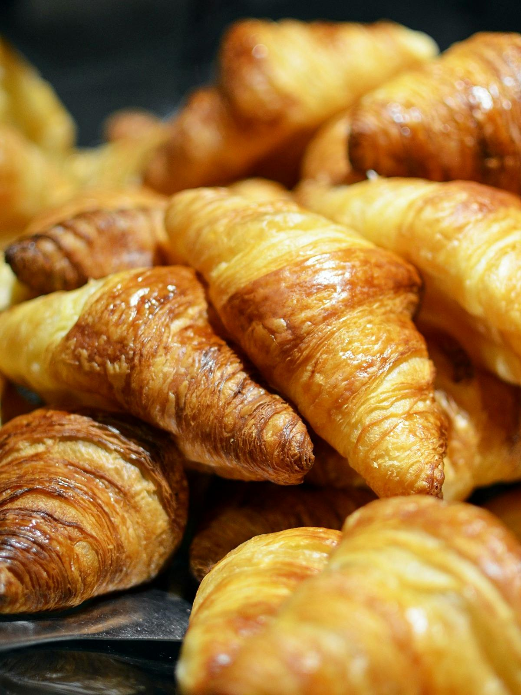
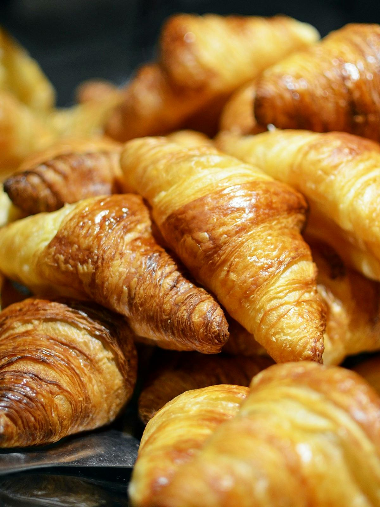

Bem-vindo à Dionizio's Paes
Desfrute de pães frescos e deliciosos, acompanhados de um café incrível!

Sobre Nós
Na Dionizio's Paes, nos dedicamos a oferecer a melhor experiência de padaria e cafeteria. Nossos produtos são feitos com ingredientes selecionados, garantindo frescor e sabor incomparáveis.
Venha nos visitar e experimente nossas especialidades!
 
